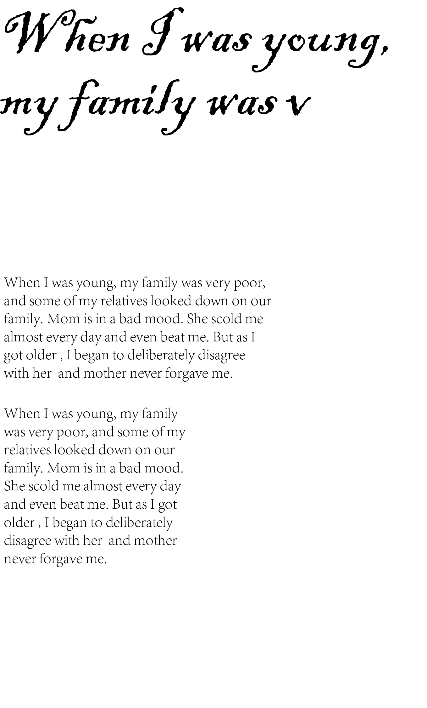
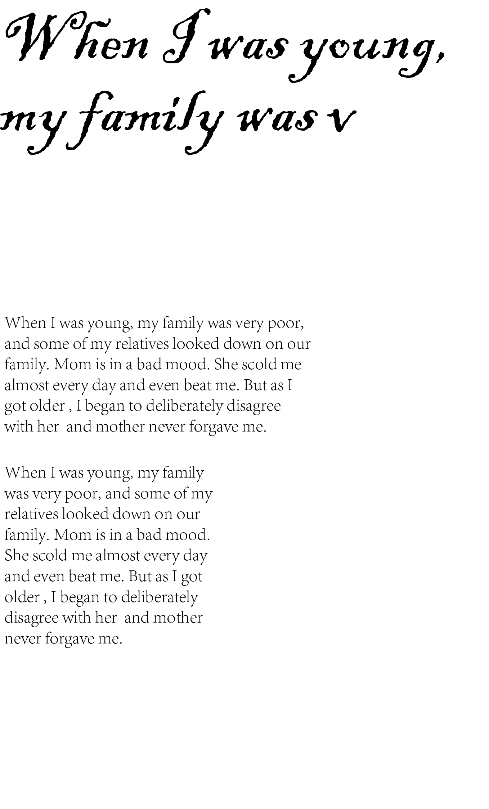

Deconstruct Chinese characters
Chinese characters, also known as Chinese characters, Chinese characters, another name for block characters, is a record symbol of Chinese, which belongs to the morpheme syllabic characters of ideograms.
One of the oldest written languages in the world, with a history of more than 6,000 years. In the body gradually from graphics to strokes, pictograms to symbols, complex to simple; In the principle of making characters from form, ideogram to form and sound.
From the ancient legend of Cang Jie making characters to the appearance of oracle bone inscriptions more than 1,000 years ago BC, generations of Chinese scholars have been trying to unravel the mystery of the origin of Chinese characters. There are different
opinions about the origin of Chinese characters, among which the more influential ones are: the theory of tying ropes, the theory of eight diagrams, the theory of carving deeds, the theory of Cang Jie making characters, the theory of carving and the theory of drawing.

 
